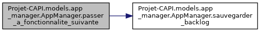

Public Member Functions | |
| def | __init__ (self, backlog_file=None) |
| def | charger_backlog (self, filename=None) |
| def | lister_backlog (self) |
| def | sauvegarder_backlog (self, filename=None) |
| def | trier_backlog (self) |
| def | ajouter_participant (self, pseudo, session_id) |
| def | get_fonctionnalite (self, fonctionnalite_id) |
| def | afficher_fonctionnalite_prioritaire (self) |
| def | ajout_fonctionnalite (self, nom, description, priorite, difficulte=None, statut="A faire", mode_de_vote=VOTE_UNANIMITE, participants=[]) |
| def | modifier_fonctionnalite (self, fonctionnalite_id, **kwargs) |
| def | supprimer_fonctionnalite (self, fonctionnalite_id) |
| def | passer_a_fonctionnalite_suivante (self) |
| def | initier_vote (self, fonctionnalite_id) |
| def | ajouter_vote (self, pseudo, vote) |
| def | tout_le_monde_a_vote (self) |
| def | reveler_votes (self) |
| def | valider_vote (self) |
| def | reinitialiser_votes (self) |
| def | participants_backlog (self, fonctionnalite_id=None) |
| def | get_data_par_pseudo (self, pseudo) |
| def | get_participant_pseudo_liste (self) |
| def | is_team_complete (self, fonctionnalite) |
| def | logout_participant (self, session_id) |
| def | deconnecter_tous_les_participants (self) |
Public Attributes | |
| backlog_file | |
| backlog | |
| state | |
Detailed Description
@brief Classe principale pour la gestion des participants et des indicateurs globaux.
Constructor & Destructor Documentation
◆ __init__()
| def Projet-CAPI.models.app_manager.AppManager.__init__ | ( | self, | |
backlog_file = None |
|||
| ) |
@brief Initialise l'état global pour les participants et les indicateurs. @param backlog_file Chemin vers le fichier JSON contenant le backlog des fonctionnalités.
Member Function Documentation
◆ afficher_fonctionnalite_prioritaire()
| def Projet-CAPI.models.app_manager.AppManager.afficher_fonctionnalite_prioritaire | ( | self | ) |
@brief Retourne la fonctionnalité ayant la priorité la plus élevée. @return Objet Fonctionnalite avec la priorité la plus élevée, ou None si le backlog est vide.
◆ ajout_fonctionnalite()
| def Projet-CAPI.models.app_manager.AppManager.ajout_fonctionnalite | ( | self, | |
| nom, | |||
| description, | |||
| priorite, | |||
difficulte = None, |
|||
statut = "A faire", |
|||
mode_de_vote = VOTE_UNANIMITE, |
|||
participants = [] |
|||
| ) |
@brief Ajoute une nouvelle fonctionnalité au backlog. @param nom Nom de la fonctionnalité. @param description Description de la fonctionnalité. @param priorite Priorité de la fonctionnalité. @param difficulte Niveau de difficulté (optionnel). @param statut Statut initial de la fonctionnalité (par défaut : "A faire"). @param mode_de_vote Mode de vote utilisé (par défaut : "unanimité"). @param participants Liste des participants associés à la fonctionnalité.
Here is the call graph for this function:
◆ ajouter_participant()
| def Projet-CAPI.models.app_manager.AppManager.ajouter_participant | ( | self, | |
| pseudo, | |||
| session_id | |||
| ) |
@brief Ajoute un participant à l'état global. @param pseudo Nom du participant. @param session_id ID de session unique. @throws ValueError Si le pseudo est vide ou existe déjà.
◆ ajouter_vote()
| def Projet-CAPI.models.app_manager.AppManager.ajouter_vote | ( | self, | |
| pseudo, | |||
| vote | |||
| ) |
@brief Ajoute un vote pour une fonctionnalité en respectant la structure de state. @details Vérifie si le participant a déjà voté. Si ce n'est pas le cas, enregistre le vote pour le participant spécifié. @param pseudo (str): Le pseudo du participant qui vote. @param vote (int/str): Le vote du participant. @raises ValueError: Si le participant a déjà voté ou s'il n'est pas trouvé.
Here is the call graph for this function:
◆ charger_backlog()
| def Projet-CAPI.models.app_manager.AppManager.charger_backlog | ( | self, | |
filename = None |
|||
| ) |
@brief Charge les fonctionnalités depuis le fichier JSON et les trie par priorité. @return Liste des fonctionnalités du backlog.
◆ deconnecter_tous_les_participants()
| def Projet-CAPI.models.app_manager.AppManager.deconnecter_tous_les_participants | ( | self | ) |
@brief Supprime tous les participants de l'état global. @details Cette méthode déconnecte tous les participants en réinitialisant la liste des participants et le mapping `mapper_session`. Le backlog est ensuite sauvegardé.
Here is the call graph for this function:
◆ get_data_par_pseudo()
| def Projet-CAPI.models.app_manager.AppManager.get_data_par_pseudo | ( | self, | |
| pseudo | |||
| ) |
@brief Retourne les données d'un participant à partir de son pseudo. @param pseudo (str): Le pseudo du participant. @return dict: Les données du participant correspondant au pseudo, ou None si non trouvé.
Here is the caller graph for this function:
◆ get_fonctionnalite()
| def Projet-CAPI.models.app_manager.AppManager.get_fonctionnalite | ( | self, | |
| fonctionnalite_id | |||
| ) |
@brief Retourne une fonctionnalité spécifique à partir de son ID. @param fonctionnalite_id ID de la fonctionnalité à récupérer. @return L'objet Fonctionnalite correspondant à l'ID, ou None si introuvable.
Here is the caller graph for this function:
◆ get_participant_pseudo_liste()
| def Projet-CAPI.models.app_manager.AppManager.get_participant_pseudo_liste | ( | self | ) |
@brief Retourne une liste des pseudos de tous les participants. @details Extrait et retourne les pseudos de tous les participants actuellement dans l'état global. @return list: Liste des pseudos des participants.
◆ initier_vote()
| def Projet-CAPI.models.app_manager.AppManager.initier_vote | ( | self, | |
| fonctionnalite_id | |||
| ) |
@brief Démarre le processus de vote pour une fonctionnalité donnée. @details Initialise le vote pour une fonctionnalité spécifique. Réinitialise les votes des participants et met à jour les indicateurs dans `state`. @param fonctionnalite_id (int): L'ID de la fonctionnalité pour laquelle le vote est initié. @raises ValueError: Si la fonctionnalité avec l'ID donné n'existe pas.
◆ is_team_complete()
| def Projet-CAPI.models.app_manager.AppManager.is_team_complete | ( | self, | |
| fonctionnalite | |||
| ) |
@brief Vérifie si l'équipe est complète pour une fonctionnalité donnée. @details Compare la liste des participants attendus pour la fonctionnalité avec la liste des participants connectés. Une équipe est complète si tous les participants attendus sont connectés. @param fonctionnalite (object): La fonctionnalité pour laquelle vérifier l'équipe. @return bool: True si l'équipe est complète, False sinon.
◆ lister_backlog()
| def Projet-CAPI.models.app_manager.AppManager.lister_backlog | ( | self | ) |
@brief Retourne la liste des fonctionnalités du backlog. @return Liste des fonctionnalités.
◆ logout_participant()
| def Projet-CAPI.models.app_manager.AppManager.logout_participant | ( | self, | |
| session_id | |||
| ) |
@brief Supprime un participant de l'état global. @details Cette méthode déconnecte un participant en supprimant ses données de la liste des participants et du mapping `mapper_session`. Le backlog est ensuite sauvegardé. @param session_id (str): L'ID de session du participant à déconnecter.
Here is the call graph for this function:
◆ modifier_fonctionnalite()
| def Projet-CAPI.models.app_manager.AppManager.modifier_fonctionnalite | ( | self, | |
| fonctionnalite_id, | |||
| ** | kwargs | ||
| ) |
@brief Modifie une fonctionnalité existante dans le backlog. @param fonctionnalite_id ID de la fonctionnalité à modifier. @param kwargs Arguments représentant les champs à modifier. @throws ValueError Si la fonctionnalité n'est pas trouvée.
Here is the call graph for this function:
◆ participants_backlog()
| def Projet-CAPI.models.app_manager.AppManager.participants_backlog | ( | self, | |
fonctionnalite_id = None |
|||
| ) |
R@brief Retourne les participants associés au backlog ou à une fonctionnalité spécifique. @details Cette méthode peut retourner la liste des participants associés à une fonctionnalité spécifique (via son ID) ou à l'ensemble du backlog. @param fonctionnalite_id (int, optional): ID de la fonctionnalité. Si aucun ID n'est fourni, retourne tous les participants associés au backlog. @return list: Liste des participants pour la fonctionnalité donnée ou pour tout le backlog. @raises ValueError: Si une fonctionnalité avec l'ID donné n'est pas trouvée.
Here is the call graph for this function:
◆ passer_a_fonctionnalite_suivante()
| def Projet-CAPI.models.app_manager.AppManager.passer_a_fonctionnalite_suivante | ( | self | ) |
@brief Permet de passer à la fonctionnalité suivante dans le backlog après validation. @return Retourne la fonctionnalité suivante
Here is the call graph for this function:

◆ reinitialiser_votes()
| def Projet-CAPI.models.app_manager.AppManager.reinitialiser_votes | ( | self | ) |
@brief Réinitialise tous les votes. @details Efface les votes des participants et réinitialise les indicateurs liés au processus de vote.
◆ reveler_votes()
| def Projet-CAPI.models.app_manager.AppManager.reveler_votes | ( | self | ) |
@brief Révèle les votes actuels pour la fonctionnalité en cours. @details Collecte et retourne les votes des participants. Met à jour l'indicateur `votes_reveles`. @return dict: Un dictionnaire contenant les votes de chaque participant.
◆ sauvegarder_backlog()
| def Projet-CAPI.models.app_manager.AppManager.sauvegarder_backlog | ( | self, | |
filename = None |
|||
| ) |
@brief Sauvegarde le backlog trié dans le fichier JSON. @details Assure que priorités et difficultés sont des entiers. @param filename Nom du fichier dans lequel sauvegarder le backlog. Si None, utilise le fichier par défaut.
Here is the caller graph for this function:
◆ supprimer_fonctionnalite()
| def Projet-CAPI.models.app_manager.AppManager.supprimer_fonctionnalite | ( | self, | |
| fonctionnalite_id | |||
| ) |
@brief Supprime une fonctionnalité du backlog. @param fonctionnalite_id ID de la fonctionnalité à supprimer.
Here is the call graph for this function:
◆ tout_le_monde_a_vote()
| def Projet-CAPI.models.app_manager.AppManager.tout_le_monde_a_vote | ( | self | ) |
@brief Vérifie si tous les participants attendus ont voté. @return bool: True si tous les participants votants ont voté, False sinon.
◆ trier_backlog()
| def Projet-CAPI.models.app_manager.AppManager.trier_backlog | ( | self | ) |
@brief Trie la liste des fonctionnalités par priorité.
Here is the caller graph for this function:

◆ valider_vote()
| def Projet-CAPI.models.app_manager.AppManager.valider_vote | ( | self | ) |
@brief Valide les votes pour la fonctionnalité actuellement en cours dans `state`. @details Selon le mode de vote défini pour la fonctionnalité, valide ou invalide les votes soumis. Met à jour l'état de la fonctionnalité et trie le backlog si les votes sont validés. @return bool: True si la fonctionnalité est approuvée, False sinon.
Here is the call graph for this function:
Member Data Documentation
◆ backlog
| Projet-CAPI.models.app_manager.AppManager.backlog |
◆ backlog_file
| Projet-CAPI.models.app_manager.AppManager.backlog_file |
◆ state
| Projet-CAPI.models.app_manager.AppManager.state |
The documentation for this class was generated from the following file:
- models/app_manager.py